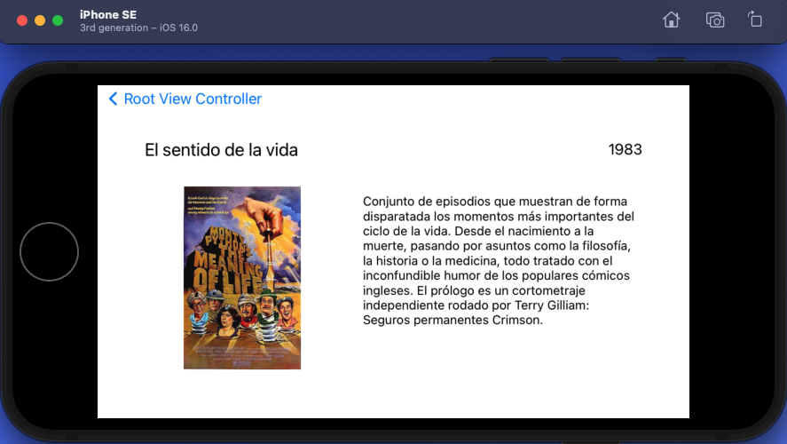
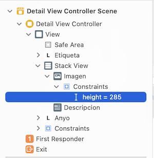
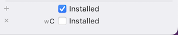

3- Aplicaciones universales
En esta primera parte empezaremos explicando cómo programar una app universal cuya interfaz se adapte a modelos y tamaños diferentes de iPhone y iPad teniendo en cuenta si las vistas son compactas o regulares. A continuación haremos un ejercicio usando el componente Split View y adaptando las vistas a distintos dispositivos.
Diseño de apps universales en XCode
En este apartado veremos qué son las aplicaciones universales, qué ventajas e inconvenientes podemos encontrar a la hora de diseñarlas, cómo programarlas, y las recomendaciones de Apple para adaptar las vistas.
Introducción
Normalmente se usa el término universal para denominar a todas aquellas aplicaciones adaptadas tanto al iPad como al iPhone. Los usuarios agradecen este tipo de aplicaciones ya que pueden usarlas en todos sus dispositivos. Además, cuanto más dispositivos compatibles tengamos más clientes potenciales podremos captar.
El desarrollo de una aplicación universal ahorra tiempo respecto a implementar apps independientes para cada dispositivo, ya que evidentemente programaremos el código en un sólo proyecto en lugar de varios. También tiene ventajas para las actualizaciones, ya que tendremos que preocuparnos de implementar los cambios sólo en una aplicación.
Diseñando la interfaz de una aplicación universal
El primer paso para hacer una aplicación universal es tener en cuenta el diseño del interfaz para cada una de las vistas. En versiones anteriores de iOS se separaban las vistas de iPhone de las de iPad usando distintos ficheros .xib. Actualmente se debe hacer de forma conjunta usando los storyboards y autolayout en el caso de UIKit (que es la que estamos viendo en la asignatura), o bien directamente mediante SwiftUI en las últimas versiones.
Estos son algunos de los aspectos principales que debemos tener en cuenta para diseñar una interfaz universal:
- Orientación. Con la información sobre la orientación del dispositivo podremos adaptar la interfaz para acomodarla al mismo.
- Estructura de las vistas. La pantalla del iPad es más grande que la del iPhone, permitiendo al usuario acceder a más información en pantalla.
- Comportamiento de las API. Componentes como los
UIPopover, por ejemplo, se comportan de forma distinta en un iPhone y en un iPad. - Características Hardware. Los dispositivos iOS pueden tener distintas funcionalidades hardware, como el número de cámaras, la capacidad de gestionar dynamic islands, soporte para Pencil, etc., que hay que tener en cuenta cuando se implementa una aplicación universal.
- Gestos. En la pantalla del iPad a veces podemos realizar más gestos que en la del iPhone debido a su tamaño. Por ejemplo, se pueden usar cuatro dedos al mismo tiempo.
- Arte. Hay que tener en cuenta la resolución de los distintos dispositivos, almacenando las imágenes en los Assets usando varias resoluciones. Una alternativa recomendada por Apple es usar archivos PDF en los Assets.
Como acabamos de ver, para programar una aplicación universal en iOS debemos tener en cuenta las características del dispositivo. Para esto podemos usar código condicional. Por ejemplo, podemos detectar en cualquier momento si estamos ejecutando nuestra app con un iPhone o un iPad con la instrucción UIDevice.currentDevice().userInterfaceIdiom o su modelo con UIDevice.currentDevice().model.
Programando una aplicación universal
Vamos a implementar un ejemplo de app universal paso a paso.
Comenzamos abriendo XCode y creando un nuevo proyecto de tipo iOS > App al que llamaremos ejercicio_prueba Abrimos la vista principal del storyboard.
- Arrastra un
UILabela la vista principal del storyboard y suéltala por el centro de la vista. - Podemos ver cómo quedaría en distintos dispositivos sin llegar a ejecutar el simulador. En el storyboard pincha en la parte inferior, donde aparece el modelo (por ejemplo, iPhone14) y elige otro modelo, por ejemplo un iPad.
- La etiqueta se desplazará a otro lugar. Si rotamos el dispositivo (en la parte inferior, con el icono de un cuadrado que tiene encima una flecha), es posible que hasta desaparezca de la pantalla.
- Ajusta las opciones de autolayout para la etiqueta. Si no controlas todavía autolayout, puedes seleccionar el triángulo de la parte inferior (Resolve autolayout issues) y elegir Reset to suggested constraints.
- Si mueves el
UILabela otra posición, verás que las líneas azules de guía aparecen ahora de color naranja. Esto es porque todavía tenemos las constraints anteriores y son inconsistentes con la nueva posición. Para actualizar la vista pincha de nuevo en el triángulo y selecciona Update constraint constants.
Puedes ampliar o reducir los previews haciendo zoom con los dedos en el trackpad, o usando los controles de la parte inferior.
En principio es sencillo, aunque a veces es complicado saber cómo ajustar las constraints y manejar autolayout. Las opciones de autolayout pueden parecer fáciles de interpretar, pero a la hora de la verdad no es fácil dejar una vista como queremos.
Vistas dependientes del dispositivo
A veces interesa tener vistas diferentes para distintos tamaños para aprovechar mejor la pantalla. Como se ha mencionado anteriormente, se recomienda usar interfaces diferenciados, ya que simplemente escalar el tamaño de los componentes para pantallas más grandes no suele quedar bien.
Para el diseño del interfaz, en lugar de distinguir entre iPhone e iPad, Apple introdujo en XCode 7 el concepto de size clases. La idea es que el desarrollador piense el diseño sólo para dos tamaños:
- Compact: Cuando tenemos un tamaño Compact debemos hacer un interfaz mínimo que muestre sólo la información más relevante de forma compacta.
- Regular: En un tamaño Regular podemos añadir más elementos y hacer un interfaz completo, ya que dispondremos de más espacio en la pantalla.
Además, estos tamaños pueden venir dados para la anchura (Width) o la altura (Height). Por tanto, debemos tener en cuenta tres factores:
- Dispositivo. iPhone o iPad.
- Orientación. Horizontal o vertical.
- Tamaño. Compacto o regular.
Básicamente (aunque en realidad es algo más complicado), los dispositivos de Apple tienen los siguientes tamaños:
En la imagen, el iPhone que se ve en arriba en el centro es un iPhone 6s plus. Los modelos más grandes de iPhone tienen un tamaño regular cuando el móvil está apaisado.
Puedes ver un listado completo de los tamaños al final de este enlace.

En realidad es más complicado porque hay que tener en cuenta que no debemos asumir que los tamaños de vista son siempre constantes, ya que por ejemplo nuestra app en un iPad podría mostrarse en una zona compacta de la pantalla en lugar de usar la pantalla completa. Por tanto, siempre debemos diseñar todas las vistas tanto en modo compacto como regular.
En la ventana inferior de XCode podemos cambiar el tipo de dispositivo, su orientación, y en el caso del iPad, su adaptación. Independientemente de lo que seleccionemos, los cambios que hagamos aquí sobre la vista se aplicarán a todos los tamaños.
Es posible mostrar un componente (por ejemplo, un botón o una etiqueta) sólo para un tamaño determinado. Para esto, puedes seleccionarlo y pinchar en el símbolo + que aparece junto a Installed en las propiedades del componente.

Si por ejemplo elegimos width Compact y height Regular (wC hR) y desmarcamos Installed, la etiqueta desaparecerá para estos tamaños (pruébalo y verás que desaparece en un iPhone SE).
También se pueden cambiar las propiedades de los componentes en función del tamaño actual. Por ejemplo:
- Selecciona en la barra de abajo un iPhone SE (1st generation) en orientación apaisada (en este caso es
wC-hC). - Pulsa sobre el botón
+a la izquierda de la propiedad Font de la etiqueta, en el Attributes Inspector, y luego en Add variation, dejando width=Compact y height=Compact. - Fíjate en que aparece una nueva columna en la tabla de propiedades. Puedes cambiar la fuente a 15 puntos, y esto sólo se aplicará en los dispositivos
wC-hC. - Como puedes ver, muchas propiedades tienen el botón
+para hacer cambios sólo con ciertos tamaños. Si quieres eliminar la configuración de una propiedad, puedes pulsar sobre el botónxque aparece a su lado.
Split View
Un Split View o Vista Divida es una combinación de dos vistas, una maestra y una detalle.
En modo horizontal (landscape), la primera vista (maestra) es equivalente en anchura a una vista de iPhone en orientación vertical. La vista maestra se suele usar para la navegación principal dentro de un listado de opciones de la aplicación.
Por otro lado, la vista de la derecha (detalle), que corresponde a la porción más grande de la pantalla, mostrará la información en detalle del elemento que hayamos seleccionado en la vista de maestra.

Por defecto, en modo vertical (portrait mode) un Split View cambia y puede verse como la vista detalle con un icono que muestra la vista maestra. Por tanto, sólo una de las vistas ocupará toda la pantalla de un iPad, como podemos ver en la siguiente imagen:

- Es muy recomendable que los Split View Controllers sean sólo root controllers, por lo que sólo debemos usarlos en la primera pantalla.
- No podemos añadir un Split View Controller dentro de un Navigation Controller. Esto implica que si lo programamos nosotros en lugar de usar la plantilla perderemos los botones de navegación.
Incorporar un controlador Split View a nuestra aplicación es bastante sencillo aunque no es trivial. Vamos a explicarlo con una app de ejemplo que mostrará información sobre películas. En modo horizontal (landscape) tendremos un listado en forma de tabla con todas las películas en la parte izquierda del Split View y cuando seleccionemos una de ellas nos aparecerán sus detalles en la parte derecha.
Ejercicio: App universal con UISplitViewController
Para empezar vamos a programar una app básica con UISplitViewController adaptada a distintos modelos y tamaños de dispositivo.
Crea un nuevo proyecto llamado ejercicio_peliculas con iOS > App y storyboard. Selecciona un iPad en la barra de abajo para ir haciendo el diseño del storyboard en este dispositivo, y el mismo modelo en el simulador (en la barra superior) para ejecutar el programa.
Arrastra un UISplitViewController al storyboard.
Mueve la flecha de inicio de la aplicación para que el nuevo controlador sea el primero cuando arranque la app y borra el controlador antiguo del storyboard y su fichero ViewController.swift. El storyboard debería quedar así:
Como puedes ver, de nuestro splitViewController salen dos vistas: Una maestra (la tabla) que está controlada por un navigation controller, y una secundaria (detalle) enlazada al splitViewController. Si pinchas en los atributos de este controlador podrás ver algo como esto:
Un atributo muy importante es el estilo (style). Los splitview pueden tener dos o tres columnas. Lo más común es dos, pero puedes hacer una app de tres columnas y que por tanto estará asociada a tres vistas para mostrar información de detalle de segundo nivel.
Puedes encontrar más información sobre splitView en este enlace.
Ya tenemos una tabla y una vista detalle, pero nos faltan los ficheros de código de los controladores. Para controlar la tabla crea un nuevo archivo con File > New > File > Cocoa touch > UITableViewController y llámalo TableViewController. Asigna el controlador a la vista:
Creamos otro controlador para la vista detalle, al que llamaremos DetailViewController, subclase de UIViewController, y al igual que el anterior lo asignamos en el storyboard.
Podemos ejecutar la aplicación. En un iPad veremos que en modo Portrait sólo se muestra la vista detalle. Pinchando en el icono superior se muestra también la maestra. Si rotamos se muestran ambas, aunque todavía están vacías.
Ahora vamos a añadir datos a la tabla. Para esto, inicializa el siguiente array en TableViewController:
let contenido = ["Uno","dos","tres"]
Borra el método numberOfSections y modifica los siguientes métodos:
override func tableView(_ tableView: UITableView, numberOfRowsInSection section: Int) -> Int {
return contenido.count
}
override func tableView(_ tableView: UITableView, cellForRowAt indexPath: IndexPath) -> UITableViewCell {
let cell = tableView.dequeueReusableCell(withIdentifier: "Cell", for: indexPath)
// Configure the cell...
cell.textLabel!.text = contenido[indexPath.row]
return cell
}
Recuerda que, al igual que en el ejercicio de la barra de búsqueda, debemos registrar el identificador de la celda en nuestro TableViewCell:

De momento la vista detalle no tiene nada. Vamos a añadirle una etiqueta en el centro, ajustándola horizontalmente y verticalmente:

Conectamos la etiqueta con IBOutlet a nuestro controlador DetailViewController. Lo llamamos etiqueta:
@IBOutlet weak var etiqueta: UILabel!
Si ejecutamos la app veremos que se muestran ya elementos en la tabla y la vista detalle, aunque la idea es que esta cambie cuando se seleccione una celda de la vista maestra.
Para esto tenemos que comunicar el controlador maestro con el detalle. Una forma sencilla de implementar esto es en el método didSelectRowAt:
override func tableView(_ tableView: UITableView, didSelectRowAt indexPath: IndexPath) {
if let indexPath = self.tableView.indexPathForSelectedRow {
let object = self.contenido[indexPath.row]
// Conexión con el controlador detalle
let detailViewController = splitViewController!.viewController(for: .secondary) as? DetailViewController
detailViewController?.etiqueta.text = object
}
}
Como puedes ver, hemos accedido al controlador splitViewController, y dentro de este al secundario (la vista detalle) que es de la clase DetailViewController. Ahora podemos acceder al Outlet que habíamos enlazado y ejecutar la app:

Como puedes ver, si rotas el dispositivo las dos vistas aparecen lado a lado. Ahora ejecuta el programa en un iPhone 14. Verás que el aspecto es distinto:

Sólo se muestra la vista maestra, y si pulsamos sobre una celda no se pasa a la vista detalle. El problema es que, aunque hemos cambiado la segunda vista internamente, esta no se ve.
Para que aparezca añadimos lo siguiente tras la conexión con el controlador detalle (en didSelectRowAt):
// Si el controlador detalle no está presentado lo mostramos
if !detailViewController!.isBeingPresented {
splitViewController!.showDetailViewController(detailViewController!, sender: self)
}
Ejecuta ahora la app en iPhone e iPad, debería funcionar correctamente con ambos y en cualquier orientación y tamaño.
Ejercicio Películas
Vamos a programar un ejemplo de aplicación completa usando SplitViewController con algunas vistas comunes y otras diferenciadas en función del tamaño. Cuando tengamos la versión final del programa, en la vista maestra aparecerá un listado de títulos de películas y la vista detalle mostrará los detalles de la película seleccionada, con el título, un texto descriptivo, el año y una imagen.
Añadir el modelo de datos
Partimos el proyecto anterior ejercicio_peliculas modificándolo para guardar películas, por lo que vamos a implementar un modelo de datos. Para esto creamos una nueva clase Pelicula mediante File > New > File > Swift file. Añadimos estos contenidos:
import UIKit
class Pelicula {
var titulo : String
var caratula : String
var fecha : String
var descripcion : String?
init(titulo: String, caratula: String, fecha: String, descripcion: String?) {
self.titulo = titulo
self.fecha = fecha
self.caratula = caratula
self.descripcion = descripcion
}
}
En MasterViewController sustituimos el array contenido que teníamos en el ejercicio de prueba por un array de Películas:
var peliculas = [Pelicula]()
Reemplazamos en este fichero todas las apariciones de contenido por peliculas, y de object por pelicula.
Vamos a añadir a la tabla una película de ejemplo. Para ello creamos el método crearListaPeliculas en la clase MasterViewController:
func crearPeliculas() {
let sentidoDeLaVida = Pelicula(titulo: "El sentido de la vida", caratula: "sentido.jpg", fecha: "1983", descripcion: "Conjunto de episodios que muestran de forma disparatada los momentos más importantes del ciclo de la vida. Desde el nacimiento a la muerte, pasando por asuntos como la filosofía, la historia o la medicina, todo tratado con el inconfundible humor de los populares cómicos ingleses. El prólogo es un cortometraje independiente rodado por Terry Gilliam: Seguros permanentes Crimson.")
self.peliculas.append(sentidoDeLaVida)
}
Añadimos una llamada a este método al final de viewDidLoad para inicializar las películas.
Cambiamos también las siguientes lineas en el método cellForRowAt para mostrar en las celdas el título de la película:
cell.textLabel!.text = peliculas[indexPath.row].titulo
A continuación modifica didSelectRowAt para usar los datos de las películas, de forma que la etiqueta de la vista detalle contenga siempre el título.
Ejecutamos el programa en un iPad, debería mostrar una película (sólo el título, ya que no hemos añadido la imagen ni otros datos) y funcionar correctamente.
Diseño de vista y controlador detalle
Vamos a diseñar la vista detalle de manera independiente en función del tamaño del dispositivo, pero antes vamos a hacer un pequeño cambio. En el código que hemos visto anteriormente, cuando se selecciona una celda de la vista maestra se modifica directamente el contenido de la etiqueta de la vista detalle. Sin embargo, no es una buena política de diseño controlar una vista (en este caso, detalle) mediante el controlador de otra (maestra).
Para mejorar el diseño del código, en DetailViewController crea un método llamado didChangePelicula que reciba como parámetro una película y actualice la vista en función de los datos que tenga esta variable. De esta forma, desde TableViewController podremos reemplazar la línea que asigna directamente la etiqueta por la llamada al método para que se haga dentro del controlador detalle:
// detailViewController?.etiqueta.text = pelicula
detailViewController?.didChangePelicula(with: pelicula)
Selecciona la vista detalle en el storyboard y haz que sea como la que se muetra a continuación. Borra el UILabel que teníamos en el ejercicio de prueba (etiqueta) tanto de la vista como de las conexiones.
Nota: Cuando borres algún elemento del interfaz que esté ya enlazado con el código con un
Outlet, debes eliminarlo también en el inspector de conexiones:

Crea dos UILabel para el título y la fecha, y también añade un UIImageView y un UITextView:

Tras colocar los elementos, usa Reset to suggested constraints para que los constraints se ajusten de forma automática. Prueba también a visualizar la vista con otros dispositivos y orientaciones seleccionándolos en la barra inferior para ver que se adapten bien.
Ponemos el UITextView sólo como lectura para impedir que el usuario lo edite y salga un teclado cuando pulse sobre él. Para esto, desmarca Editable y Selectable en sus propiedades.
Conecta todos los elementos de la vista (titulo, fecha, imagen y descripcion) al controlador DetailViewController con IBOutlets.
Por último, descarga esta imagen y arrástrala a los Assets. Modifica el método didChangePelicula para actualizar todos los outlets. En el caso de la imagen sería:
{kind=link}
self.imagen.image = UIImage(named: pelicula.caratula)
Ejecuta el programa simulando distintos iPhone y iPad para ver los resultados.
Seguro que en algunos casos no queda demasiado bien visualmente, pero de momento no es un problema. Vamos a ajustar mejor la vista en función del dispositivo.
Vista compacta y stacks
Empezaremos con el diseño para tamaños compactos. Si ejecutamos el programa en un iPhone SE en landscape, veremos que la imagen ocupa casi toda la pantalla y deja poco espacio para el texto. En apaisado y con tamaños compactos, lo ideal sería que la imagen estuviera a la izquierda y el texto a la derecha.
Existe una solución muy limpia para esto: usar stacks para agrupar las vistas y gestionar los giros.
Selecciona el UIImageView y el UITextView. Ahora pulsa sobre el elemento Stack, el icono de la flecha hacia abajo en esta imagen, y selecciona Stack View:
Verás que las vistas se unen porque hemos creado un grupo con dos elementos. Como ves, un stack se usa para agrupar vistas y nos permite realizar ciertas acciones con ellas. Vamos a reajustar las constraints con este nuevo Stack, seleccionando Reset to suggested constraints para toda la vista detalle.
Si ejecutamos el programa, el aspecto será más o menos como el que teníamos antes. Vamos a arreglar los problemas del giro, ya que cuando ponemos un iPhone en landscape la películano se visualiza bien. Para esto necesitamos conectar nuestro Stack View a DetailViewController. Llámalo stackView:
@IBOutlet weak var stackView: UIStackView!
Ahora vamos a añadir el siguiente método en DetailViewController:
override func viewWillLayoutSubviews() {
if view.bounds.size.width >= view.bounds.size.height {
self.stackView.axis = .horizontal
}
else {
self.stackView.axis = .vertical
}
}
Este método se invoca cuando iOS detecta que hay que reajustar las vistas (por ejemplo cuando se realiza un giro). En el código indicamos que cuando tengamos más espacio horizontal que vertical nuestras vistas del stack deben reposicionarse. Además, lo harán con una animación. Prueba a ejecutar de nuevo el programa en un iPhone, debe verse así en portrait:
Y así en landscape:

Para saber más sobre lo que podemos hacer con la clase UIStackView, puedes consultar su referencia en este enlace.
Vista regular
Vamos a ajustar el constraint de la altura de la imagen para hacerla más grande en tamaños wR-hR, ya que en estos casos tenemos más espacio. Selecciona el constraint en la escena:

Ahora pulsamos sobre el botón + de la altura, añadiendo una variación para wR-hR:
Y finalmente indicamos un valor más alto:
Ejecutamos el programa y vemos que funciona correctamente en iPad, en cualquier orientación.
Ahora vamos a cambiar el tipo de letra para wR-hR, de forma que se vea más grande en un iPad. Cambia sólo para tamaños wR-hR la fuente del texto a System-20, y la del título a System-30 y en negrita:

Finalmente vamos a dejar la fecha sólo en aquellos casos en los que tengamos suficiente espacio en anchura. Esto asumimos que ocurre en orientaciones regular width (wR), por lo que tenemos que desmarcarla para compact widht (wC) y cualquier altura (h Any):

Esta etiqueta sólo se mostrará en los iPad cuando nuestra app esté a pantalla completa en cualquier orientación, o en en los iPhone grandes a pantalla completa y landscape.
Ejecutamos el código en el simulador de iPad para ver los resultados. Deberíamos obtener algo parecido a esto:

El aspecto no está mal, pero sólo es una primera aproximación. Vamos a mejorar un poco el programa con los siguientes cambios:
-
Completa el modelo añadiendo dos películas más (con sus imágenes) al proyecto, las que prefieras.
-
Vamos a mejorar la presentación visual. Para ello cambia el título de la barra de la vista detalle, de Película al título de la película seleccionada en la vista con el año entre paréntesis. Por ejemplo, en la barra superior debería salir El sentido de la vida (1983).
-
Cambia el aspecto gráfico de las vistas para que queden lo mejor posible. Puedes mover los objetos, redimensionarlos o modificar sus propiedades, por ejemplo.
-
La primera vez que aparece la aplicación en portrait (sin llegar a seleccionar una película) sale la vista detalle con información vacía. Haz que en este caso se muestre sólo
Películaen el título, y que la descripción sea el mensaje Selecciona una película.